Seja Bem-Vindo(a) ao meu Portfólio!
Me chamo Letícia França, muito prazer!
Sou uma estudante do 3º Ano do curso de Desenvolvimento
Web e Mobile do Ensino Médio e Técnico de Informática do Colégio Cotemig. A minha escolha em relação a essa área,
foi devido na pandemia eu me descobrir com bastante
interesse em tecnologia, principalmente na área de criação visual.
E o curso técnico em informática me abriu horizontes para muitas outras áreas também, na qual
tenho gostado bastante, como Front-End e Back-End, e agora no terceiro ano, a criação de aplicativos,
tanto para dispositivos Android quanto para IOS.
Mas, além de ser apaixonada por tecnologia, há algo que amo ainda mais, que é roça (e tudo que envolve ela).
Principalmente os animais de grande porte, como vacas e cavalos, sou fascinada por esses animais. No entanto,
tenho comigo que vou conseguir unir essas duas áreas que amo tanto, que é a tecnologia com o campo.
Letícia França